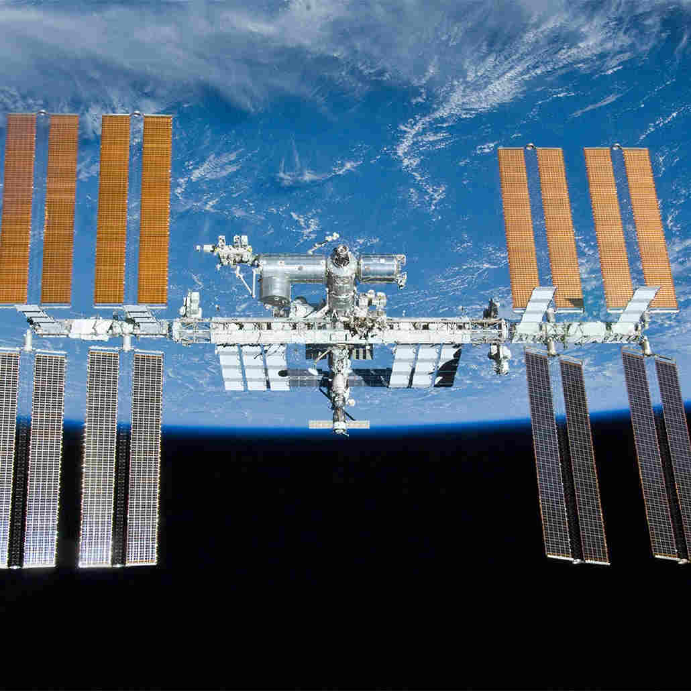
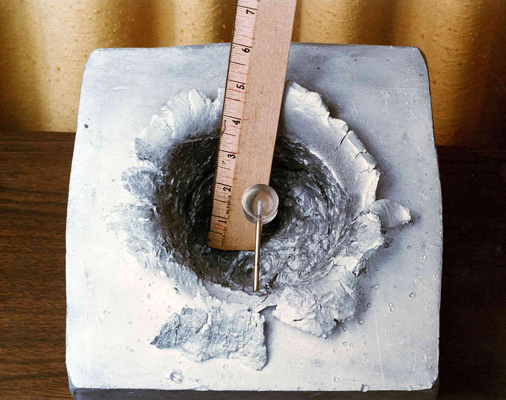

Source: NASA.
International Space Station
International Space Station
The International Space Station (ISS) is a space station in low Earth orbit, and is one of two currently operational space stations in orbit. The construction of the ISS started in and it was assembled in orbit by 42 assembly flights.[1]
The ISS has over 1.5 million lines of code on the U.S. segment, and keeps tabs on 400,000 different data points. These data points are critical to the health of the astronauts living in the station, who don't see their families for prolonged periods of times.
Orbital Debris
Orbital debris (space debris) is a huge problem that most people underestimate. The ISS has an orbital velocity of 7.6km/s[1] so any collision could be catastrophic.

Image taken as part of the Strategic Defense Initiative[2]
How are orbital debris avoided?
To avoid debris, the ISS has to increase and decrease its altitude. It does this once on average[3], but as more and more satellites and spacecraft are launched there will be more orbital debris present in low-Earth orbit.
Future of the ISS
The ISS is becoming more and more expensive to run as it gets older and requires more maintenance, and the future of the ISS is set to end in . NASA plans to deorbit the station into the Pacific Ocean and will pay commercial companies in exchange for time on their crafts. NASA scientists will use the time bought on commerically funded stations to carry out experiments, as this will be deemed more cost effective.[4]
References
- National Aeronautics and Space Administration. International Space Station Facts and Figures. [Online]. 2021. [Accessed 5 March 2022]. Available from: https://www.nasa.gov/feature/facts-and-figures
- R. D. Ward [Camera Operator]. SDIO KEW Lexan projectile. [Online]. 1985. [Accessed 5 March 2022]. Available from: https://www.esa.int/Science_Exploration/Human_and_Robotic_Exploration/International_Space_Station/ISS_International_Space_Station
- National Aeronautics and Space Administration. Frequently Asked Questions: Orbital Debris. [Online]. 2011. [Accessed 5 March 2022]. Available from: https://www.nasa.gov/news/debris_faq.html/
- Sky News. NASA plans to take International Space Station out of orbit in January 2031 by crashing it into 'spacecraft cemetery'. [Online]. 2022. [Accessed 5 March 2022]. Available from: https://news.sky.com/story/nasa-plans-to-take-international-space-station-out-of-orbit-in-january-2031-by-crashing-it-into-spacecraft-cemetery-12530194